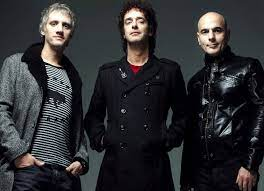

SODA STEREO
Soda Stereo fue una banda del Rock alternativo formada en Buenos Aires, Argentina en 1982

Integrantes:
Gustavo Cerati - Voz y guitarras
Zeta Bosio - Bajo y coros
Charly Arlberti - Batería y programaciones
Año
Título
1985
Ruido Blanco
1986
Doble Vida
1987
Signos
Signos no fue su ultima producción